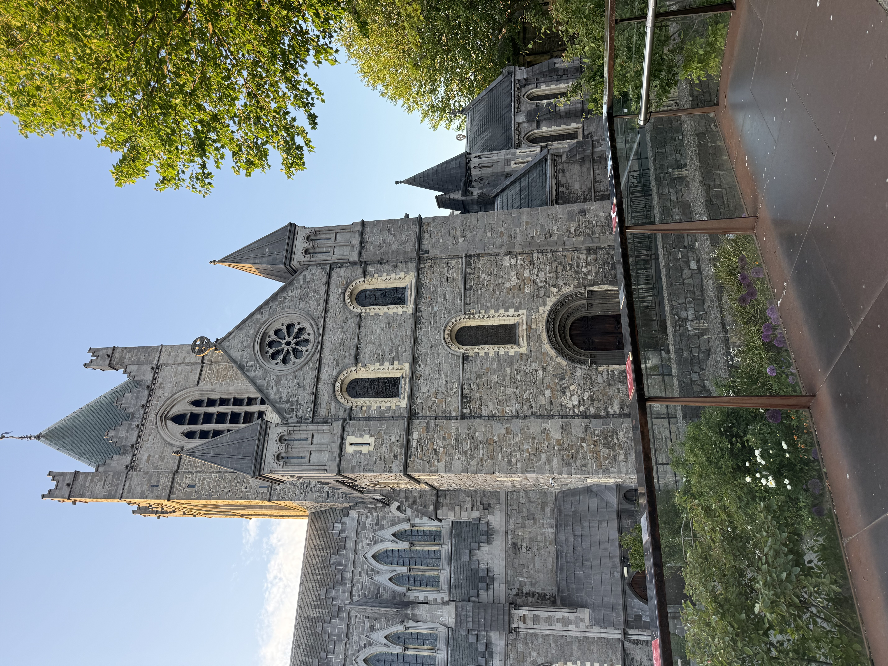
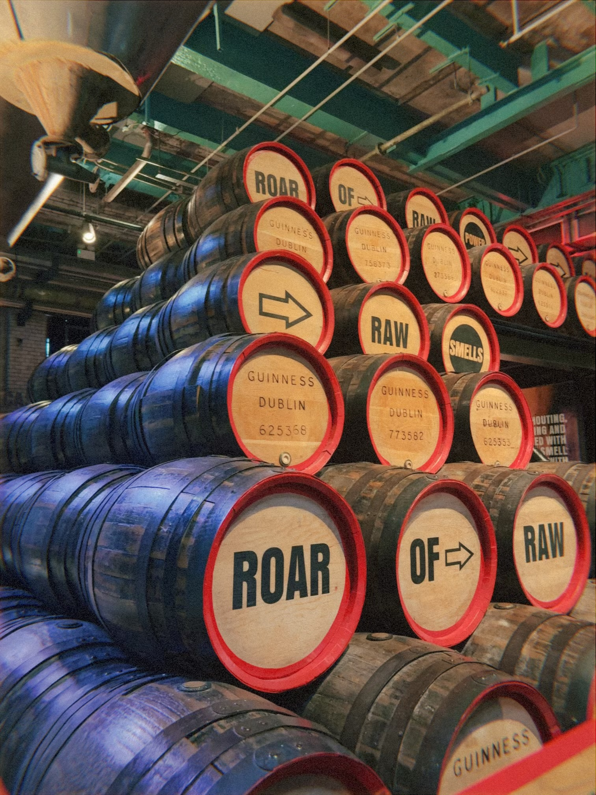
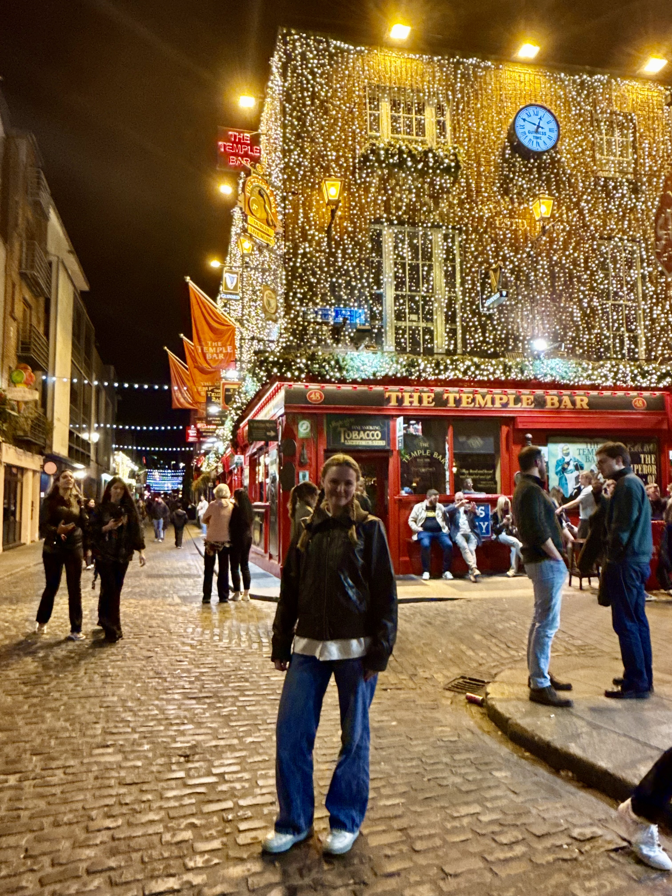

Christ Church Cathedral
For me christ church was a helpful reminder of how to get to my housing, its spire and bells ringing in the distance a beacon guiding my way back. It's also the remnants of the oldest part of Dublin, a relic from viking times. The oldest stone is from the base of the building, and where the windows are round with lighter stone accenting them. It used to be the heart of the city, and I love that this was the home base for my time here. It stands as a reminder of Dublin's past as a deep water sanctuary, for the religious changes over the years and its ringing is still present today. The bells welcomed me into the city when I first arrived, and would wake me up with light streaming into the StayCity's windows on the weekend.
Guinness Storehouse
The Guinness Storehouse was a super fun experience! It reminded me of EPCOT's living with the land at disney. Larger than life but still quite a spectacle. I wish I learned more through the tour but I think it was really geared to be more about entertainment. My favorite pieces of this were the views from the top at the gravity bar and the advertisement section showing how Guiness marketing has changed with time.


The Temple Bar
The first time I went to The Temple Bar was when a friend had to use the bathroom and I did not want to leave her alone. A nice Irish guy we met said he could find us a bathroom and as we were right outside the bar, that's where he led us. When we were in the middle of the bar he turned around and walked out. I think it's pretty funny that the only reason I went to that bar was from an Irish person dragging us in there. The second time I went was again because friends had to use the bathroom. We stayed a bit for the live music, played by two guys who looked really annoyed that they were in Temple Bar. The lead vocalist sounded like what I could only describe as Irish accent singing in a midwest emo style. He would look over at the banjo player every so often and roll his eyes, but when playing mister bright side he made a couple students from Michigan very happy.